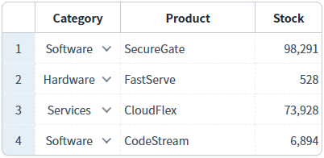
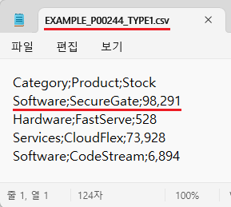
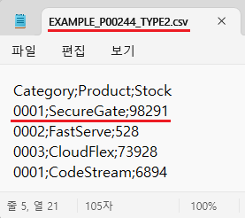

GridView의 'saveCSV' 메소드를 사용하여, CSV 형식으로 다운로드할 데이터를 설정한 예제입니다.
이 기능은 'saveCSV' 메소드의 첫 번째 인자인 JSON 객체의 'type' 속성을 설정하여 구현할 수 있습니다. 다음은 'type' 속성의 설명입니다.
type : [default: 1, 0] 사용할 데이터. 0: value 사용. 1: 화면의 표시 값 사용.
다운로드할 데이터를 화면의 출력값으로 지정하고 구분자를 ','(쉼표)로 설정하고자 할 때, 출력값에 ','(쉼표)를 제거하는 옵션을 지정할 수 있습니다.
관련 속성은 아래와 같습니다.
- type : [default: 1, 0] 사용할 데이터. 0: value 사용. 1: 화면의 표시 값 사용.
- delim : [default: ';'] CSV 파일에서 데이터를 구분할 구분자
- removeQuotation : [default: 0, 1] value에 ','(쉼표/comma)의 제거 여부 (0 : 유지, 1 : 제거)
(기본 설정) 화면의 표시 값으로 CSV 다운로드
value로 CSV 다운로드
1
STEP 1: 초기 상태 확인하기
GridView의 'Category' 컬럼과 'Stock' 컬럼의 셀을 클릭하여 화면에 표시된 값을 확인합니다. 다음은 첫 번째 행의 화면 표시 값과 실제 값입니다.
'Category'
- 화면 표시 값: Software
- 실제 값: 0001
'Stock'
- 화면 표시 값: 98,291
- 실제 값: 98291
Image 1.브라우저(Chrome) 실행 예시

2
STEP 2: '(기본 설정) 화면의 표시 값으로 CSV 다운로드' 버튼을 클릭합니다.
'EXAMPLE_P00244_TYPE1.csv' 파일이 다운로드 됩니다.
3
STEP 3: 실행된 결과를 확인합니다.
다운로드 된 'EXAMPLE_P00244_TYPE1.csv' 파일을 메모장으로 실행합니다.
컬럼 간 구분자는 ';'로 설정되고 데이터는 화면에 표시된 값으로 다운로드 됩니다.
Image 2.다운로드된 CSV 파일 예시 - Windows 11 메모장

1
STEP 1: 초기 상태 확인하기
GridView의 'Category' 컬럼과 'Stock' 컬럼의 셀을 클릭하여 화면에 표시된 값을 확인합니다. 다음은 첫 번째 행의 화면 표시 값과 실제 값입니다.
'Category'
- 화면 표시 값: Software
- 실제 값: 0001
'Stock'
- 화면 표시 값: 98,291
- 실제 값: 98291
Image 3.브라우저(Chrome) 실행 예시
2
STEP 2: 'value로 CSV 다운로드' 버튼을 클릭합니다.
'EXAMPLE_P00244_TYPE2.csv' 파일이 다운로드 됩니다.
3
STEP 3: 실행된 결과를 확인합니다.
다운로드 된 'EXAMPLE_P00244_TYPE2.csv' 파일을 메모장으로 실행합니다.
컬럼 간 구분자는 ';'로 설정되고 데이터는 값으로 다운로드 됩니다.
Image 4.다운로드된 CSV 파일 예시 - Windows 11 메모장

1
'saveCSV' 메소드를 사용하여 스크립트를 작성합니다.
Example 1.Script
//예제 파일의 스크립트 "scwin.btn_ex2_onclick"를 참고하세요. var jsnOptions = { fileName: "EXAMPLE_P00244_TYPE2.csv", //파일명 type: "0" //다운로드할 데이터 - value }; //GridView 'grd_exam1'의 데이터를 CSV 형식으로 다운로드합니다. grd_exam1.saveCSV(jsnOptions);
saveCSV( options )
options.type
options.delim
options.removeQuotation